LIAR'S BAR DEATH TABLE : 라이어스 바 데스 테이블
어둠이 내려앉은 지하 스피크이지 바, 피투성이 원형 테이블 위에 놓인 20장의 카드와 6연발 리볼버.
과거 직접 제작했던 2D 웹 게임 《Liar's Roulette》의 덱 심리전과 스팀 《Liar's Bar》의 1인칭 신체 몰입감(Body Awareness) · 절차적 IK 처형 연출을 하나로 융합한 3D 서스펜스 데스게임 프로젝트입니다.
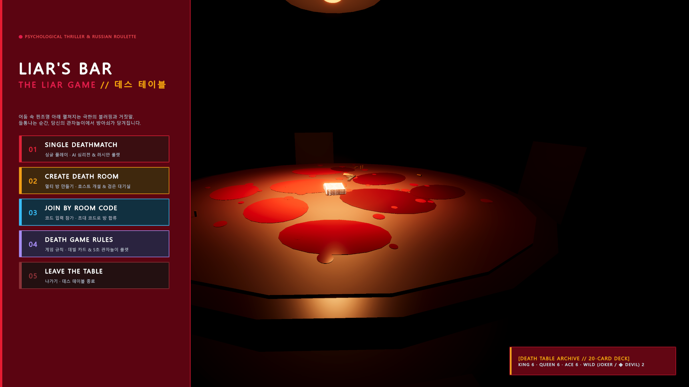
내가 꽂힌 주제: “거짓말이 곧 목숨값이 되는” 1인칭 블러핑 데스게임
🎯 핵심 주제 정의: 《라이어스 바 : 데스 테이블》
- 장르적 정체성: 4인 테이블탑 카드 블러핑(Bluffing) + 1인칭 러시안 룰렛(Russian Roulette) 서스펜스 게임.
- 핵심 규칙 (20장 카드 덱): King 6장 · Queen 6장 · Ace 6장 + 특수 카드 Joker 2장 또는 Devil 2장으로 구성된 20장 덱을 4명에게 5장씩 배분.
- 블러핑과 심판: 매 라운드 지정된 타겟 카드(K/Q/A)를 낸다고 주장하며 뒷면으로 1~3장을 제출. 다음 차례 참가자가 “거짓말!(Liar)”을 선언하면 앞사람의 카드만 즉시 뒤집어 진위를 판정.
- 데스 테이블의 대가: 거짓말이 들통나거나 진실을 의심한 패자는 자기 앞의 6연발 리볼버를 직접 집어 들어 관자놀이에 대고 방아쇠를 당김 (치사율 1/6 → 2/6 → 3/6 → … → 6/6).
🃏 인게임 5종 카드 (마우스를 올리면 뒤집힙니다)
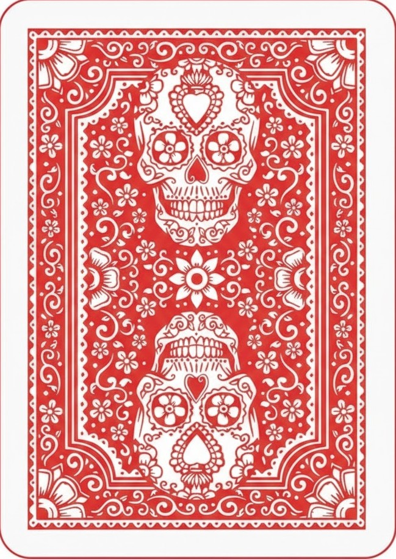
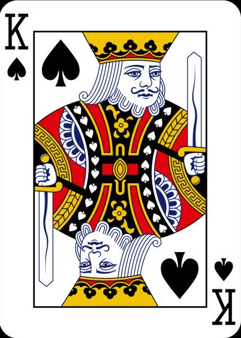
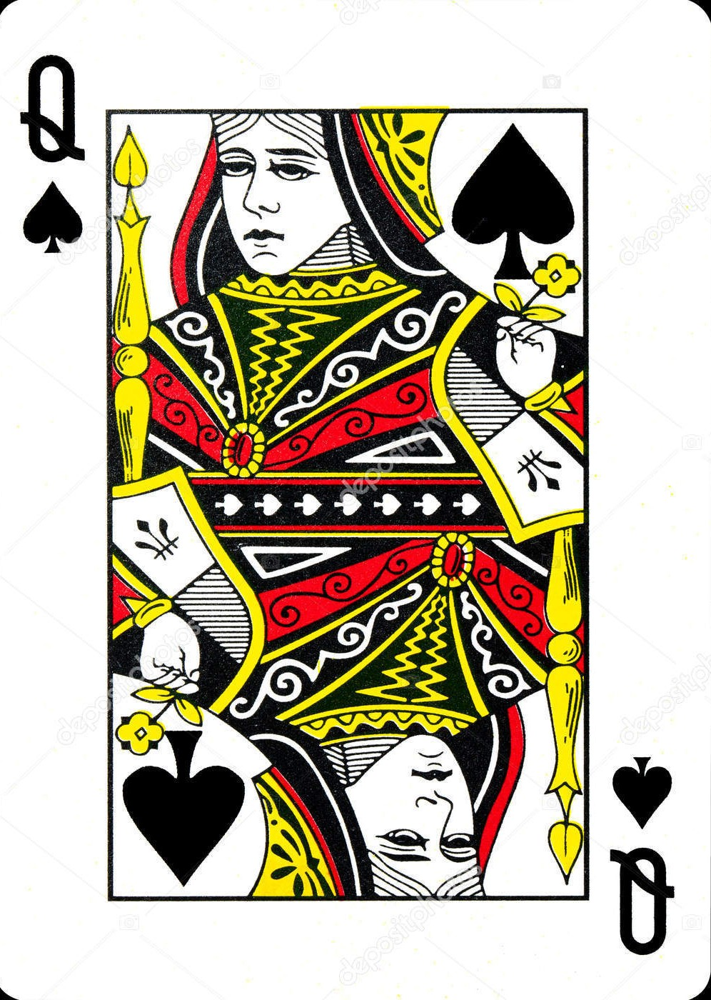
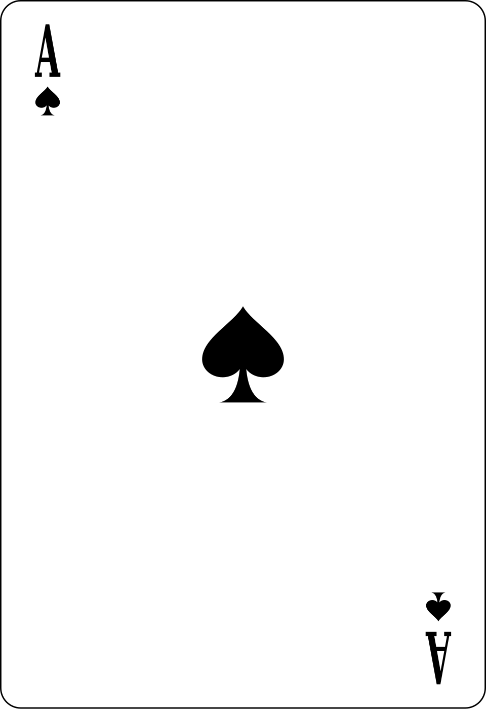
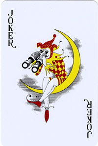
※ 실제 게임 에셋: 킹카드(스페이드 K) · 퀸카드(스페이드 Q) · 스페이드 카드(A) · 조커카드 · 데빌카드(타로)
100년 전 고전 블러핑과 러시안 룰렛이 지금도 극한의 공포를 주는 이유
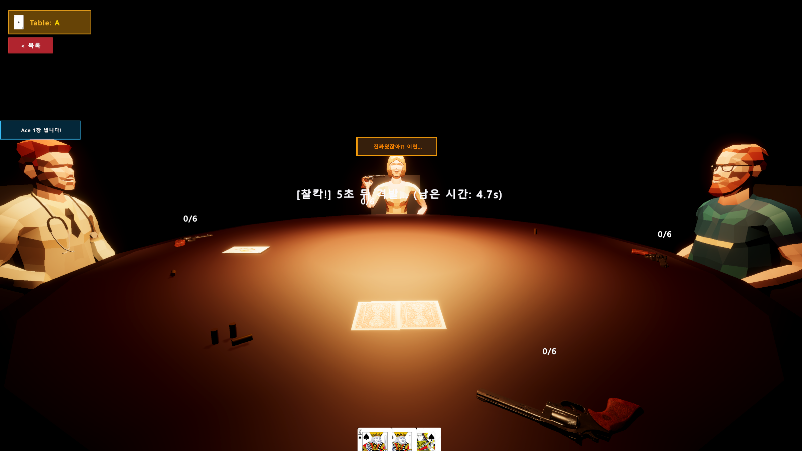
01. 시대를 초월한 원초적 긴장감
트럼프 카드를 뒷면으로 내는 ‘블러핑’과 ‘러시안 룰렛’은 100년 넘은 고전 규칙입니다.
“들통나면 죽는다”는 비가역적 리스크가 결합될 때 복잡한 현대 게임 이상의 아드레날린을 뿜어냅니다.
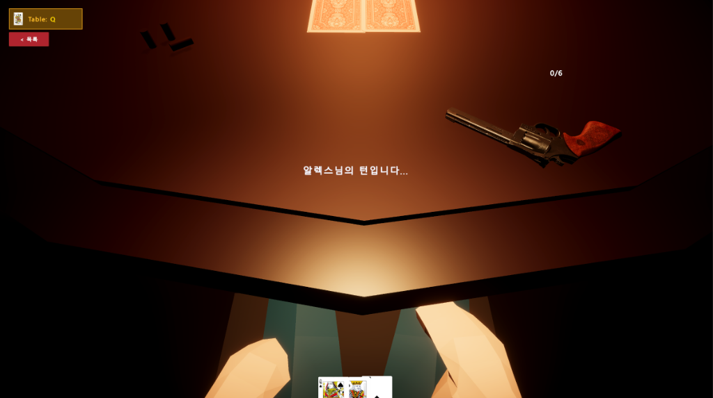
02. 비언어적 시선과 ‘1인칭 신체’의 위력
단순 카드 판이 아닌, 고개를 숙였을 때 내 몸통과 테이블 위 리볼버가 보이는 1인칭 공간감입니다.
상대와 마주치는 시선과 척추 회전을 통해 ‘신체적 체화 공포(Embodied Horror)’로 승화시킵니다.
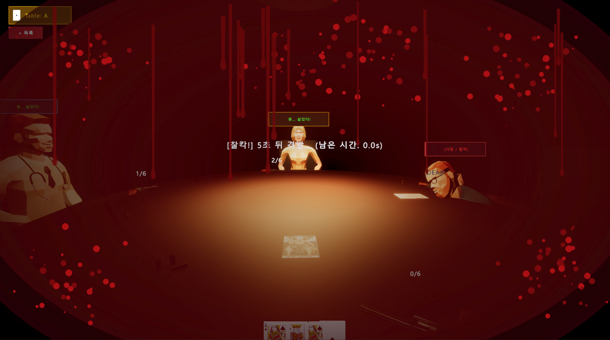
03. 자체 웹 프로토타입의 한계 돌파
웹(HTML/JS) 2D 《Liar's Roulette》에서 20장 카드 덱 심리전의 룰적 재미를 먼저 검증했습니다.
2D 화면만으로는 부족했던 총구를 관자놀이에 겨누는 5초의 정적과 테이블 슬럼프를 3D로 완성했습니다.
심리 추론 게임의 3가지 규모·층위(Scale & Layer) 확장 조사
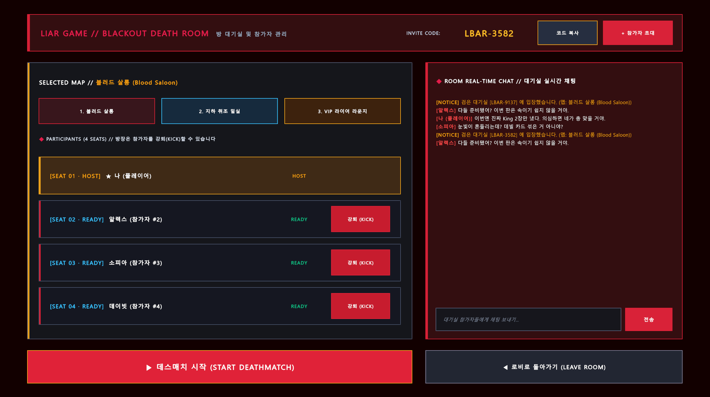
🗣️ 제1층위: 언어·집단 추론 규모
레퍼런스: 《라이어 게임》 · 《마피아》
- 규모 특성: 참가자들이 실시간 텍스트 채팅으로 심리전을 펼치는 거시적 집단 추론.
- 장단점: 높은 소셜 몰입도를 주지만, 대화에만 의존할 경우 물리적 긴장감이 떨어짐.
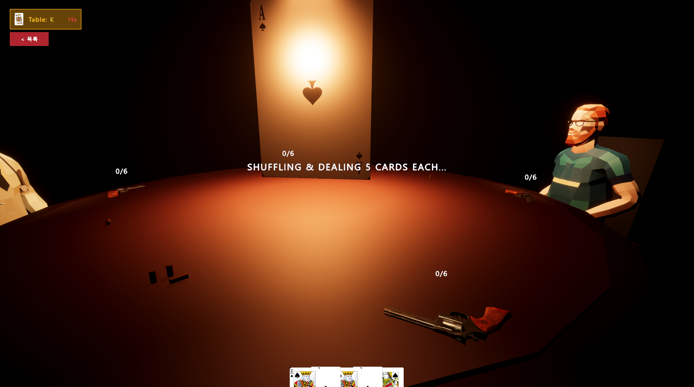
🃏 제2층위: 전술 카드·보드게임 규모
레퍼런스: 자체 웹 게임 《Liar's Roulette》
- 규모 특성: 20장의 카드(K/Q/A + 특수)를 카운팅하는 전술 테이블 보드게임.
- 장단점: 규칙이 직관적이고 회전율이 빠르나, 2D UI만으로는 밀실 현장감이 부족함.
🔫 제3층위: 1인칭 물리·밀실 공포 규모
레퍼런스: 스팀 《Liar's Bar》 · 《Buckshot》
- 규모 특성: 핀조명 밀실 테이블에서 직접 총을 겨누는 초근접 1인칭 서스펜스.
- 장단점: 해머 콕킹음과 압도적 공포를 주나, 3D 조작 중 UI 가독성이 저하되기 쉬움.
“세 가지 층위를 단 하나의 테이블에서 한 번에 경험할 수는 없을까?”
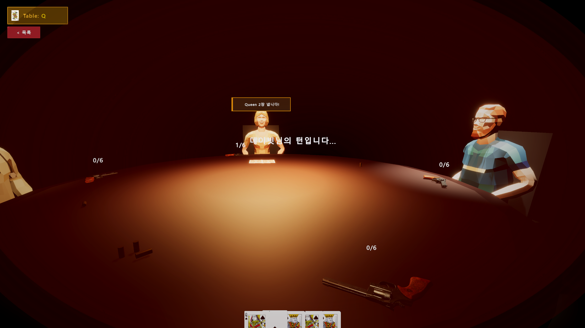
Direction 1. 턴 연동 하이브리드 시점·덱 UX
마우스를 움직이다가 카드를 잘못 누르는 문제를 해결하기 위해 내 턴과 상대 턴의 조작계를 분리했습니다.
- 내 차례: 카드 덱이 전면 확대되며 마우스 시점 자동 잠금 (웹 게임의 클릭 정확도).
- 상대 차례: 카드를 내면 즉시 시점 해제 & 카드가 하단 50% 매립되어 테이블 시야 100% 확보.
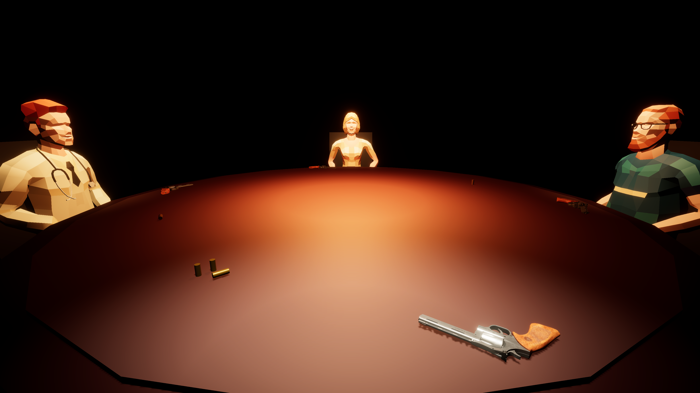
Direction 2. 총이 날아오지 않는 2단계 리얼 모션
총이 허공에서 손으로 순간 이동하는 이질감을 없애고 물리적 거리와 절차적 IK로 구현했습니다.
- 리볼버를 각 참가자 오른손 앞(
1.18m)에 근접 배치. - 1단계: 상체를
15°숙여 테이블 위 총잡이를 직접 파지. - 2단계: 손바닥 월드 좌표와 동기화하여 관자놀이까지 한 덩어리로 조준.
Direction 3. 타협 없는 데스 임팩트 & 암실 미학
잡광을 모두 끄고 오직 테이블 직하 핀조명(2200루멘)과 무광 종이 카드에만 시선을 집중시켰습니다.
- 어색하게 멈추는 사망이 아닌, 골반·상체 전방 보간으로 얼굴(뺨)이 테이블 위 핏웅덩이에 완전히 닿도록 연출.
세 가지 층위를 완성하는 3대 코어 모드 & 디테일 메커니즘
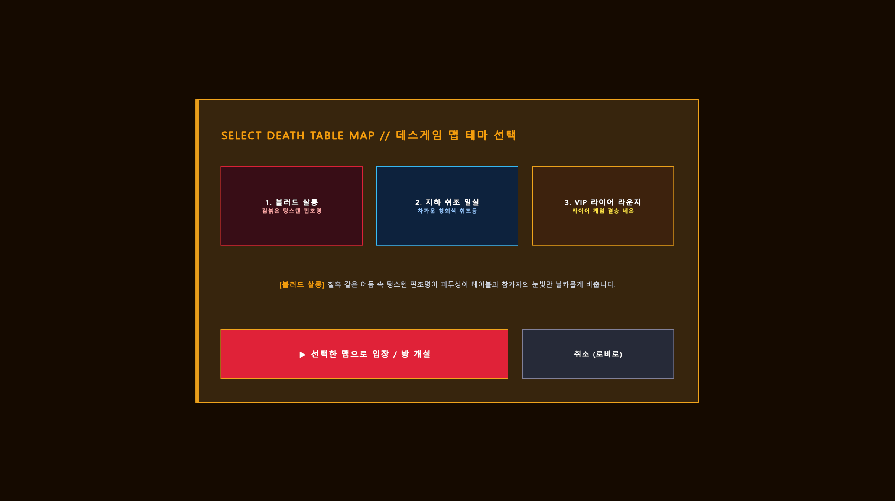
① 소셜 & 블랙아웃 데스룸 모드
- 로비 & 3종 테마: 싱글·방 개설·6자리 초대 코드(
LBAR-3582) 합류 및 블러드 살롱 · 취조 밀실 · VIP 라운지 3종 조명 테마. - 블랙아웃 대기실: 4인 좌석 관리, 방장 강퇴(
KICK), 실시간 심리전 채팅(ROOM CHAT). - 3D 말풍선: 인게임 발언(
"Ace 1장 냅니다!")이 캐릭터 머리 위 월드 좌표에 실시간 연동.
② 전술 20장 카드 & 데빌 심판 모드
- 20장 딜링 & 타겟 랭크: 매 라운드
Table: K / Q / A지정 및 중앙SHUFFLING 5 CARDS연출. - 뒷면 제출 & 거짓말 판정: 1~3장 뒷면 제출 후 거짓말 선언 시 앞사람 카드만 즉시 검증.
THE DEVIL집단 처형: 데빌 카드 적발 시 중앙에 타로가 공개되며 제출자 외 생존자 전원 동시 룰렛 수행.
③ 1인칭 5초 서스펜스 & 혈흔 처형 모드
- 관자놀이 조준 5초 카운트다운: 패자가 3D 리볼버로 관자놀이를 겨누며
[찰칵!] 5.0s → 0.0s진행. - 누적 탄창 카운터: 생존할 때마다 탄창이
0/6 → 1/6 → 2/6으로 상승하여 치사율 증폭. - 혈흔 드립 & 슬럼프: 실탄 격발 시 화면 전체 핏방울 및 사망자(
DEAD) 테이블 안착.
프로토타입 구현 후 단계적으로 에셋과 연출을 업그레이드하는 파이프라인
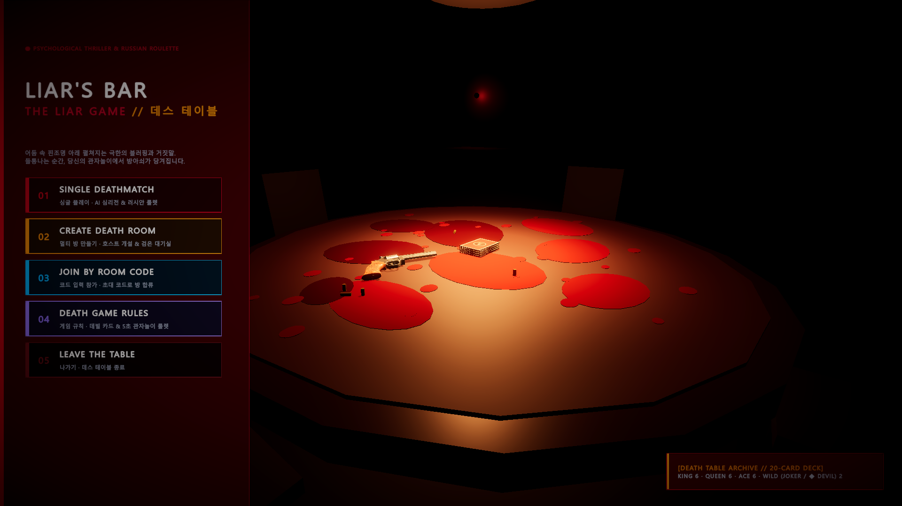
STEP 01. 코어 프로토타입 & 공간 구축
Turn #1 ~ #12 // 기반 아키텍처 완성
- Unity 6 HDRP 환경 세팅 및 GitHub 전용
.gitignore구성. - Unity MCP Server (Port 6400) 연동으로 씬 계층·컴포넌트 자동화 제어.
- 어두운 바, 대형 원형 테이블, 직하 스포트라이트, 소켓 멀티플레이 코어 구현.
STEP 02. 웹 게임 에셋 & 사운드 이식
Turn #13 ~ #25 // 규칙·오디오 업그레이드
- 웹 게임 《Liar's Roulette》의 실제 포커 카드 텍스처(K/Q/A/Joker/Devil)를 Unity 3D 카드 메시에 이식.
- 원작 오디오 6종(
Cold Pressure,Pulse,cock/bang/click) 및 우든 UI 사운드 적용. - 5대 로비 메뉴, 3종 맵 테마 모달, 6자리 코드 및 대기실 채팅 UI 완성.
STEP 03. 3D 에셋 & 절차적 IK 고도화
Turn #26 ~ #38 // 디테일·모션 폴리싱
CityPeople캐릭터 4인 착석 및 손목 0° 교정 · 팔꿈치 하방 벡터 · 주먹 파지 적용.DWm7153D 리볼버를 참가자 앞에 근접 배치하고 관자놀이 5초 서스펜스 완성.THE DEVIL적발 시 화면 전체 혈흔 드립 및 사망자(DEAD) 테이블 안착 연출 완성.
프로토타입 실행 녹화 영상(Movie_001.mp4) 풀스크린 시연
Movie_001.mp4 / YouTube HD
Google Antigravity에 사용한 실제 핵심 프롬프트 & 구현 결과 (Turn #1~#38)
“유니티 새로운 프로젝트를 만들었는데 깃허브에 올릴수 있게 깃이그노어를 추가해주고 유니티 mcp랑 연결해줘. 어두운 방, 테이블을 비출 조명, 여러 사람들을 배치해서 라이어 게임을 제작해줘.”
“라이어스바 보면 아래보면 자기 몸이 보이잖아 그렇게 제작하길 원해. 전에 참고하라했던 웹게임을 참고해서 데빌 카드판일때는 화면 비네팅 효과에 악마 웃음소리 등 음악, 효과음 전부 구현해줘.”
“머리에 총을 맞고 테이블에 엎어지는 모션을 적용시키고 싶어. 엎어졌을때 머리밑에서 피가 어느정도 퍼지고 고인 피를 흉내내고 싶어. 음악은 Pulse In The Dark로 바꿔줘.”
“고개를 내리면 카메라가 앞으로 살짝 이동하면서 아래를 바라보게 해줘. 팔꿈치 방향도 수정해주고 총을 잡을때 주먹을 쥐게 해줘. 방아쇠를 당긴 사람부터 카드를 내게 해줘.”
“엔터 눌렀을때 바로 채팅을 칠수 있게 해주고 마우스도 클릭 없이 둘러볼수 있도록 해줘. 카드 낼때 테이블에 뒷면 수평으로 내고 거짓말을 외쳤을때 앞사람 카드만 뒤집도록 해줘.”
“내 차례일때는 덱이 확대되면서 마우스를 움직여도 화면이 움직이지 않게 해주고, 내 차례가 아닐때는 카드가 절반 아래에 박혀서 왼쪽이 제일 앞에서 겹쳐있게 해줘. 손을 뻗고 총을 잡아서 대도록 해주고 손목 꺾임과 죽을때 얼굴이 테이블에 닿도록 수정해줘.”
DEATH TABLE 경청해 주셔서 감사합니다
《LIAR'S BAR : DEATH TABLE》 프로젝트는 100년 된 고전 블러핑의 규칙적 재미와
Unity 6 HDRP 1인칭 체화 공포, 그리고 AI 페어 프로그래밍을 통한 빠른 프로토타이핑 검증을 완수했습니다.